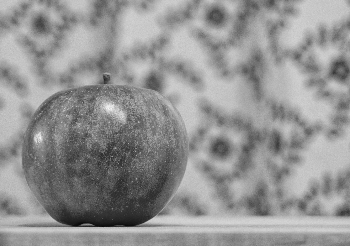

名前
ST_Grayscale — 元のラスタと指定したバンドを赤、緑、青バンドとして一つの8BUIバンドを持つラスタを生成します。
概要
(1) raster ST_Grayscale(raster rast, integer redband=1, integer greenband=2, integer blueband=3, text extenttype=INTERSECTION);
(2) raster ST_Grayscale(rastbandarg[] rastbandargset, text extenttype=INTERSECTION);
説明
三つの入力バンド (一つ以上のラスタ)を与えられ、一つの8BUIバンドを持つラスタを生成します。タイプが8BUIでない入力バンドは全てST_Reclassで再分類されます。
![[注記]](images/note.png) | |
この関数は |
Availability: 2.5.0
例: 一つ目の形式
SET postgis.gdal_enabled_drivers = 'ENABLE_ALL';
SET postgis.enable_outdb_rasters = True;
WITH apple AS (
SELECT ST_AddBand(
ST_MakeEmptyRaster(350, 246, 0, 0, 1, -1, 0, 0, 0),
'/tmp/apple.png'::text,
NULL::int[]
) AS rast
)
SELECT
ST_AsPNG(rast) AS original_png,
ST_AsPNG(ST_Grayscale(rast)) AS grayscale_png
FROM apple;
|
 original_png
|
 grayscale_png
|
例: 二つ目の形式
SET postgis.gdal_enabled_drivers = 'ENABLE_ALL';
SET postgis.enable_outdb_rasters = True;
WITH apple AS (
SELECT ST_AddBand(
ST_MakeEmptyRaster(350, 246, 0, 0, 1, -1, 0, 0, 0),
'/tmp/apple.png'::text,
NULL::int[]
) AS rast
)
SELECT
ST_AsPNG(rast) AS original_png,
ST_AsPNG(ST_Grayscale(
ARRAY[
ROW(rast, 1)::rastbandarg, -- red
ROW(rast, 2)::rastbandarg, -- green
ROW(rast, 3)::rastbandarg, -- blue
]::rastbandarg[]
)) AS grayscale_png
FROM apple;